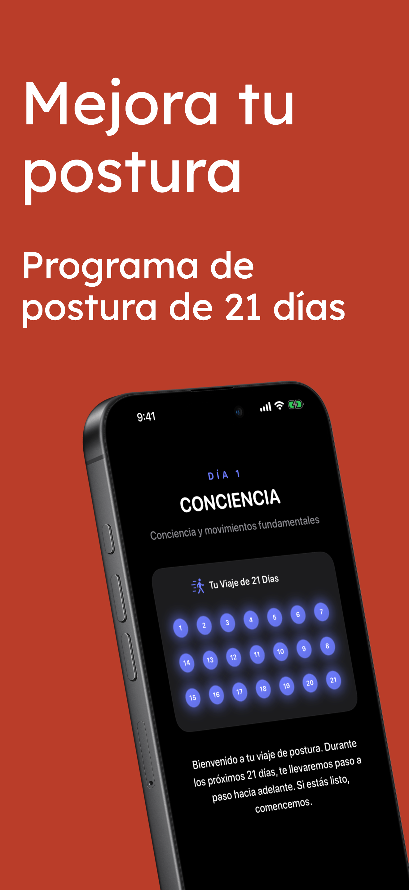
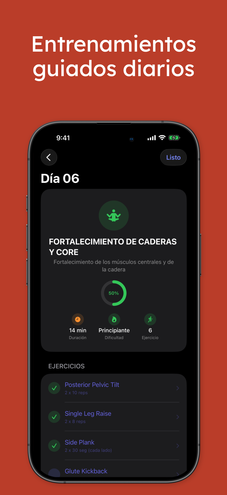
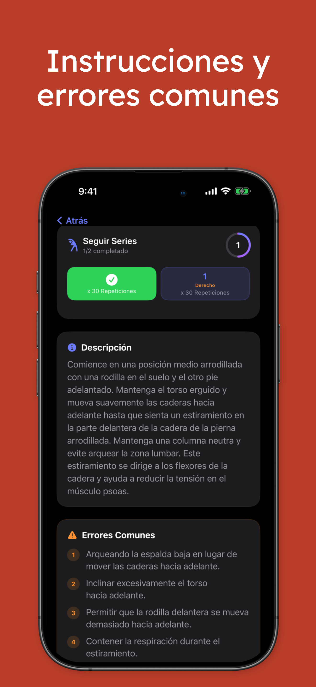
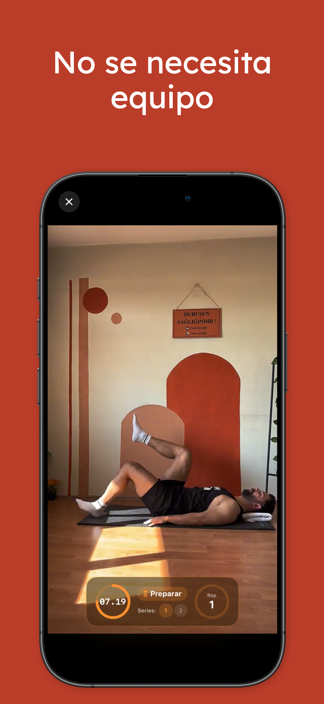
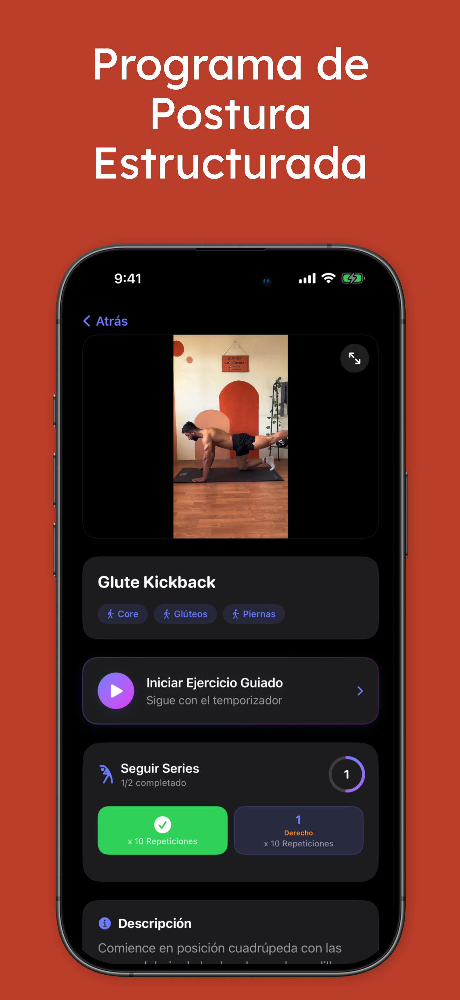
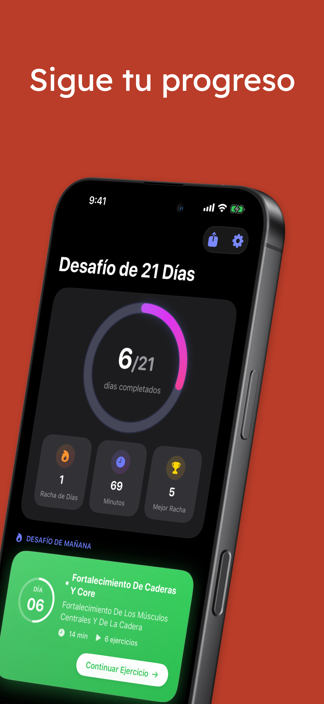
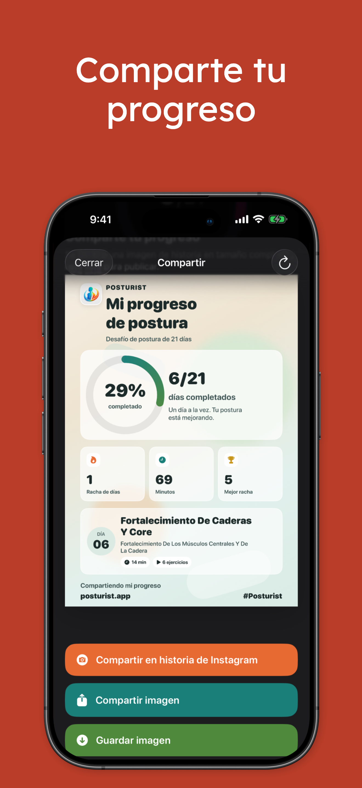

Sigue un camino claro para mejorar tu postura
Una progresión simple desde la conciencia corporal hasta el fortalecimiento ayuda a mantener la constancia y saber qué viene después.
Posturist te ayuda a mejorar tu postura paso a paso con un reto estructurado, guía clara de ejercicios, seguimiento del progreso y sesiones diarias motivadoras.

Una progresión simple desde la conciencia corporal hasta el fortalecimiento ayuda a mantener la constancia y saber qué viene después.
Las pantallas de ejercicio, temporizadores, repeticiones y seguimiento de series hacen que cada entrenamiento sea fácil de seguir.
Las estadísticas, las rachas y las tarjetas de progreso compartibles convierten la constancia en algo visible y gratificante.
Por la estructura de la app y las capturas, Posturist se siente como un producto guiado para crear hábitos: un flujo de onboarding limpio, una experiencia basada en retos, notificaciones diarias y un fuerte enfoque en el progreso.


Diseño minimalista, interfaz oscura, visuales potentes de progreso y entrenamiento práctico hacen que el producto se vea premium y cercano.
Sesiones rápidas que encajan en la vida real, ya sea en casa, en una pausa o después de entrenar.
Los ejercicios están organizados en un plan, reducen la fatiga de decisión y ayudan a mantener el rumbo.
Anillos de finalización, rachas, minutos y próximas sesiones mantienen alta la motivación.
Las descripciones y los errores comunes ayudan a realizar los movimientos de forma más segura y efectiva.
Un vistazo rápido al flujo del reto, los entrenamientos guiados, los detalles del ejercicio y las vistas compartibles del progreso.




Si quieres, después puedo ampliar esta landing page con enlaces a App Store, testimonios, FAQ, página de privacidad y formulario de contacto.